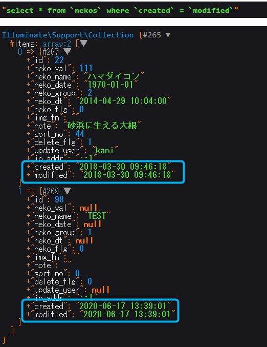

$query = ¥DB::table('nekos')->whereNull ('neko_val');
dump($query->toSql()); // → "select * from `nekos` where `neko_val` is null"
$data = $query->get();
dump($data);
whereNotNull
$query = ¥DB::table('nekos')->whereNotNull ('neko_val');
dump($query->toSql()); // → "select * from `nekos` where `neko_val` is not null"
$data = $query->get();
dump($data);
whereDate
$query = ¥DB::table('nekos')->whereDate ('neko_dt', '2014-04-28');
dump($query->toSql()); // → "select * from `nekos` where date(`neko_dt`) = ?"
$data = $query->get();
dump($data);
whereMonth
$query = ¥DB::table('nekos')->whereMonth ('neko_dt', '4'); // 「04」表記も検索対象
dump($query->toSql()); // → "select * from `nekos` where month(`neko_dt`) = ?"
$data = $query->get();
dump($data);
whereDay
$query = ¥DB::table('nekos')->whereDay ('neko_dt', 28);
dump($query->toSql()); // → "select * from `nekos` where day(`neko_dt`) = ?"
$data = $query->get();
dump($data);
whereYear
$query = ¥DB::table('nekos')->whereYear ('neko_dt', 2014);
dump($query->toSql()); // → "select * from `nekos` where year(`neko_dt`) = ?"
$data = $query->get();
dump($data);
whereTime
$query = ¥DB::table('nekos')->whereTime ('neko_dt', '10:05:00'); // 秒を省略して時分（10:05)での検索も可能
dump($query->toSql()); // → "select * from `nekos` where time(`neko_dt`) = ?"
$data = $query->get();
dump($data);
$query = ¥DB::table('nekos')->whereColumn ('created', 'modified');
dump($query->toSql()); // →"select * from `nekos` where `created` = `modified`"
$data = $query->get();
dump($data);

オペレータの指定もできる
$query = ¥DB::table('nekos')->whereColumn ('created', '<', 'modified');
dump($query->toSql()); // →"select * from `nekos` where `created` < `modified`"
$data = $query->get();
dump($data);
$query = ¥DB::table('nekos')->where ([
['neko_name', 'kame'],
['neko_val', 3],
]);
dump($query->toSql()); // →"select * from `nekos` where (`neko_name` = ? and `neko_val` = ?)"
$data = $query->get();
dump($data);
whereBetween
$query = ¥DB::table('nekos')->whereBetween ('neko_val', [2,4]);
dump($query->toSql()); // →"select * from `nekos` where `neko_val` between ? and ?"
$data = $query->get();
dump($data);
whereNotBetween
$query = ¥DB::table('nekos')->whereNotBetween ('neko_val', [2,4]);
dump($query->toSql()); // →"select * from `nekos` where `neko_val` not between ? and ?"
$data = $query->get();
dump($data);
$query = ¥DB::table('nekos')
->where('neko_name', '=', 'ゴボウ')
->orWhere('neko_val', '<', 4);
dump($query->toSql()); // →"select * from `nekos` where `neko_name` = ? or `neko_val` < ?"
$data = $query->get();
dump($data);